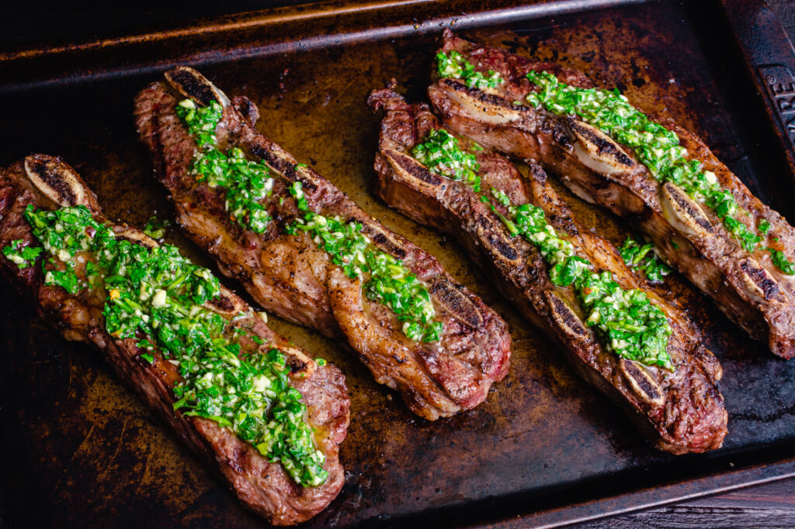
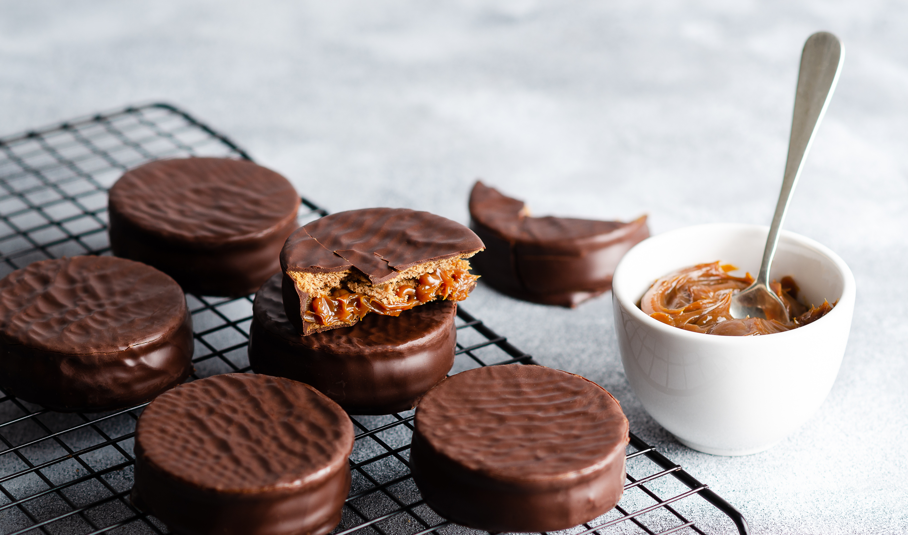

O Tradicional Asado
Muito mais que uma refeição, o "Asado" (churrasco argentino) é um ritual social. Feito na parrilla com brasas de lenha, cortes clássicos como o Bife de Chorizo e o Ojo de Bife ganham um sabor inconfundível, sempre acompanhados de molho chimichurri.
Empanadas
Essa massa assada ou frita, com bordas trabalhadas em um formato chamado "repulgue", é uma paixão nacional. Cada província argentina tem sua receita clássica, mas as "A Cuchillo" (Cortado na Faca), são as mais procuradas.

Alfajor de Doce de Leite
O doce de leite argentino é considerado um dos melhores do mundo. Ele é a estrela do famoso Alfajor, um doce composto por duas massas macias que derretem na boca, fartamente recheadas com doce de leite e cobertas com chocolate ou glacê.